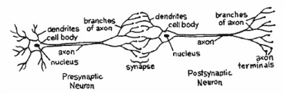
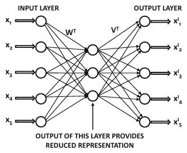
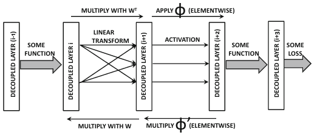
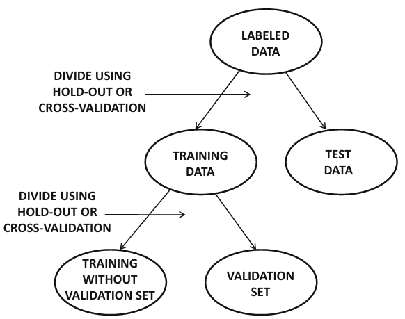
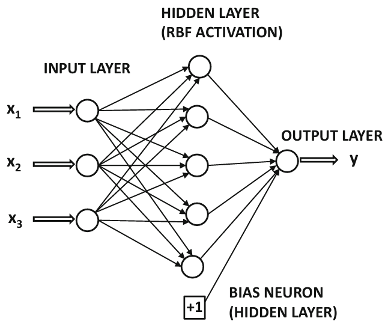
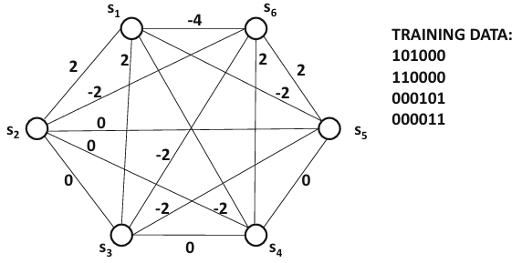
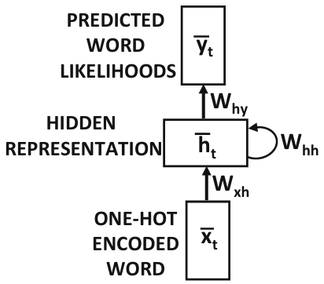
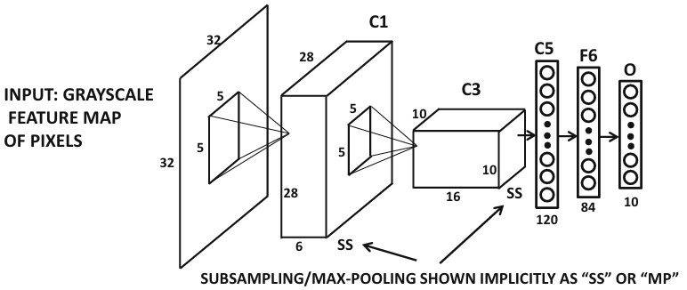
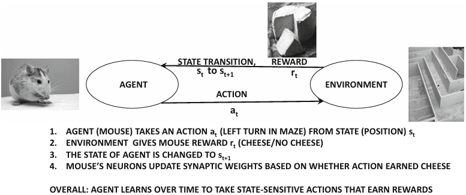
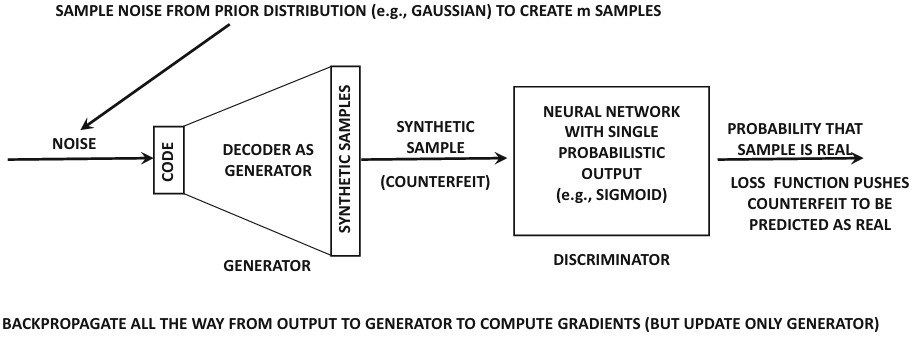

Neural Networks and Deep Learning (2nd Edition)

"Neural Networks and Deep Learning" by Charu C. Aggarwal is a comprehensive and insightful guide into the foundational and advanced aspects of neural networks and deep learning, suitable for students, researchers, and practitioners in the field of artificial intelligence. The book begins by introducing fundamental concepts in neural networks, such as perceptrons, activation functions, and the mathematics underpinning the learning processes that enable neural networks to recognize patterns and make predictions. As readers progress, Aggarwal delves into complex architectures like convolutional neural networks (CNNs) for image processing, recurrent neural networks (RNNs) for sequence and time-series data, and various advanced network architectures, such as autoencoders and generative adversarial networks (GANs). Each chapter meticulously covers the theoretical aspects of these architectures, supported by real-world examples and applications to reinforce the practical relevance of deep learning. One of the book’s highlights is its systematic approach to explaining the optimization algorithms that power neural networks, such as gradient descent and backpropagation, which are essential for training and refining models. Aggarwal also provides an in-depth look at regularization methods and optimization strategies to prevent overfitting, which are crucial for achieving robust model performance. Advanced topics like transfer learning, reinforcement learning, and unsupervised learning are explored, offering a well-rounded perspective on neural networks beyond traditional supervised techniques. Practical implementation is a key focus throughout, with ample guidance on using popular deep learning libraries and tools, equipping readers to build and test their own neural network models. Aggarwal’s emphasis on mathematical rigor, combined with practical applications and coding insights, makes this book not only a thorough academic resource but also a practical guide for real-world deep learning tasks. Readers gain a deep appreciation for the challenges and nuances involved in designing, training, and deploying neural networks for complex tasks, from image recognition to language processing. In summary, "Neural Networks and Deep Learning" by Charu C. Aggarwal is an essential resource that balances theoretical understanding with practical skills, empowering readers to engage confidently with both the fundamentals and innovations in the rapidly evolving field of deep learning.
Writen by Charu C. Aggarwal
Published: 2023
Stars: 3/5
Go back to select something elseTable of Content
- Chapter1: An Introduction to Neural Networks
- Chapter2: Machine Learning with Shallow Neural Networks
- Chapter3: Training Deep Neural Networks
- Chapter4: Teaching Deep Learners to Generalize
- Chapter5: Radial Basis Function Networks
- Chapter6: Restricted Boltzmann Machines
- Chapter7: Recurrent Neural Networks
- Chapter8: Convolutional Neural Networks
- Chapter9: Deep Reinforcement Learning
- Chapter10: Advanced Topics in Deep Learning
Chapter 1 - An Introduction to Neural Networks

This chapter introduces the foundations of neural networks, covering their inspiration from biological neurons and their adaptation to artificial neural architectures. It discusses the basic structure, including single-layer perceptrons and multilayer networks, and explains how neural networks use activation and loss functions to solve machine learning problems. Challenges in training, such as overfitting and computational constraints, are also presented, along with approaches like regularization, early stopping, and ensemble methods to improve performance.
Chapter 2 - Machine Learning with Shallow Neural Networks

Here, traditional machine learning models are paralleled with shallow neural network architectures. By understanding these relationships, the chapter shows how basic algorithms, like logistic regression and support vector machines, relate to neural structures, emphasizing scenarios where shallow models may be preferable over complex architectures. The chapter also introduces autoencoders for tasks like matrix factorization and feature selection, highlighting their utility in data-lean environments.
Chapter 3 - Training Deep Neural Networks

This chapter delves into backpropagation for training deep networks, building on the earlier introduction of neural networks. It covers essential techniques for preprocessing and initializing data, optimizing convergence with gradient descent methods, and tackling the challenges of deep network stability. The discussion includes various strategies to prevent overfitting, such as network compression for deployment on mobile devices, making the chapter a comprehensive guide to training robust deep models.
Chapter 4 - Teaching Deep Learners to Generalize

The chapter focuses on methods to enhance the generalization ability of neural networks, primarily through ensemble methods like bagging and boosting to reduce variance and bias, respectively. Randomized connection dropping (e.g., Dropout) is also explored as a technique to minimize overfitting, allowing the model to learn more resilient features. The chapter emphasizes both theoretical and practical strategies to refine model predictions and robustness.
Chapter 5 - Radial Basis Function Networks

In this chapter, Radial Basis Function Networks are explored as an alternative neural network structure, utilizing high-dimensional transformations to make data linearly separable. RBF networks are presented with various applications in classification, regression, and interpolation, showing their relationship to kernel methods such as SVMs. This approach highlights flexibility and effectiveness in scenarios where data clusters are key.
Chapter 6 - Restricted Boltzmann Machines

This chapter explains RBMs as unsupervised learning models used for dimensionality reduction and feature extraction, particularly useful in pretraining deep networks. The workings of RBMs, including their energy-based structure and Gibbs sampling for training, are discussed in depth, emphasizing their applications in complex models where feature learning and data reconstruction are critical.
Chapter 7 - Recurrent Neural Networks

RNNs are introduced for tasks that require sequence-based data processing, such as language and time-series prediction. This chapter discusses the RNN architecture, including long short-term memory (LSTM) and gated recurrent units (GRU), which help overcome issues like vanishing gradients. Practical applications and optimizations for training RNNs are also covered.
Chapter 8 - Convolutional Neural Networks

This chapter covers CNNs, emphasizing their power in image and spatial data analysis through convolutional and pooling layers. Techniques for feature extraction and the hierarchical nature of CNNs are detailed, along with examples in visual recognition tasks. CNN architectures, like AlexNet and VGG, illustrate practical advancements and applications in deep learning for image processing.
Chapter 9 - Deep Reinforcement Learning

Reinforcement learning, as presented here, focuses on training neural networks to perform goal-oriented tasks by interacting with environments. The chapter outlines core concepts, including rewards, states, and actions, and introduces algorithms like Q-learning and policy gradients. Applications in robotics and AI demonstrate how reinforcement learning is used to solve complex, sequential decision-making problems.
Chapter 10 - Advanced Topics in Deep Learning

The final chapter explores advanced deep learning topics, such as generative adversarial networks (GANs), transfer learning, and semi-supervised learning methods. Techniques for handling large datasets and optimizing deep learning performance on diverse hardware platforms are discussed, providing insights into the latest innovations and their applications in state-of-the-art AI systems.